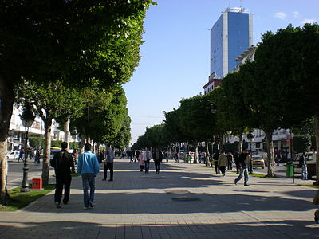
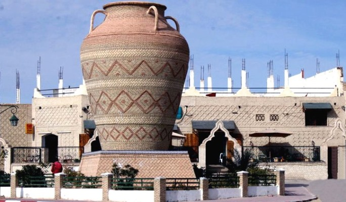

-
Tunisie

Il y a tant de choses à découvrir dans chaque région de la Tunisie : des paysages contrastés, un littoral long de 1250 km parsemé d’îles et d’archipels, des traditions et coutumes diverses, un riche héritage historique. Nous vous présentons ces régions en les répartissant, par commodité, en trois zones : le nord, le centre et le sud.
-
Tunis
Cité moderne en pleine expansion et grande ville d’histoire, Tunis n’en finit pas de surprendre. Du côté de la médina, de nombreux édifices anciens ouvrent leurs portes, les uns transformés en musées ou lieux de culture, les autres en restaurants ou en salons de thé. Inscrite par l’Unesco sur la liste du patrimoine mondial, la médina recèle des merveilles. A ses portes s’étendent des quartiers pittoresques aux belles façades 1900 tandis qu’en périphérie, restaurants chics et lieux de loisirs se succèdent dans les nouveaux quartiers.
Read more -
Nabeul et le Cap Bon

Promontoire pointé vers la Sicile, la région du Cap Bon est un vaste jardin où les orangers et les citronniers brandissent leurs fruits d’or au cœur de l’hiver. Ses plages de sable fin comptent parmi les plus belles de Tunisie. Ville principale du Cap Bon, Nabeul est une ville d’artisanat réputée pour sa poterie, ses nattes de jonc et ses essences de fleurs. Le port de pêche de Kélibia, les sources chaudes de Korbous, les fauconniers d’El Haouaria sont quelques-unes des curiosités de cette région.
Read more
-
Sousse et Port El-Kantaoui

Longues plages, vieilles pierres, hauts palmiers… Sousse est une ville pleine de séductions où loisirs et exotisme se conjuguent harmonieusement. Grande ville moderne, c’est l'une des stations balnéaires les plus animées de Tunisie. Ville d’histoire, elle a conservé une magnifique médina et d’exceptionnels monuments du haut Moyen Age. A quelques minutes, une petite ville touristique au cachet andalou a été construite spécialement pour les vacanciers, autour d’une marina : la station intégrée de Port El Kantaoui.
Read more -
Tozeur et Nefta
Villes surgies du désert et blotties contre d’immenses palmeraies, Tozeur et Nefta surprennent, fascinent et plongent dans le dépaysement. La lumière brûlante du Sahara s’y déverse dans les ruelles des vieux quartiers, entre les hautes façades de briques blondes. A Tozeur, palaces, parcs à thème et musées ont fleuri autour de la vieille ville. A Nefta, d’innombrables coupoles signalent des tombeaux de saints, dominant l’oasis qui se love dans une cuvette appelée la Corbeille. Les dunes du Sahara ne sont qu’à quelques kilomètres …
Read more -
Douz

Couverte d’un fin manteau blanc tel un paysage enneigé, la région de Douz offre la plus douce des approches du désert. Des cordons de dunes et de gracieux bouquets de palmiers longent les routes mangées par le sable. L’immensité blonde du désert est là, à portée de main, tandis que les palmeraies offrent de délicieuses haltes ombragées dans des forêts de palmiers-dattiers. Au cœur de la région, une immense étendue salée aux reflets changeants : le Chott El-Jerid.
Read more
Tunis
Que voir ?
La partie ancienne de Tunis, la médina, est exceptionnellement bien conservée. Les souks, couverts de voûtes laissant passer une lumière tamisée, grouillent d’animation et regorgent de marchandises de toutes sortes : tissus aux mille couleurs, parfums ou bijoux précieux. Le contraste est saisissant avec la sérénité des ruelles voisines. Murs blancs et ferronneries bleues, passages voûtés, coupoles de tuiles vertes, portes jaunes encadrées de délicats dessins de pierre sculptée… Il faut savoir flâner pour apprécier toute la diversité de la médina. Côté ville moderne, les quartiers entourant l’avenue Bourguiba ont leur cachet particulier. Au pied des immeubles de style Art nouveau et Art déco, une foule active se presse entre les cafés populaires, les boutiques de mode, les tramways et les rangées de palmiers et de ficus. Visitez le marché central débordant de victuailles. Buvez un soda en terrasse en admirant la façade sculptée du Théâtre municipal, inauguré en 1902, et la statue d’Ibn Khaldoun, grand penseur né à Tunis au 14e siècle.
Que faire ?
Dans la médina de Tunis, vous pourrez visiter des monuments remarquables, assister à une exposition photographique au palais Kheireddine, écouter un concert de musique arabo-andalouse dans une ancienne médersa ou assister à la biennale d’art contemporain Dream City. Au centre-ville, visitez la cathédrale de style byzantino-mauresque, toujours en activité. Ecoutez un concert de musique classique au Théâtre municipal, construit en 1902, ou promenez-vous au parc du Belvédère. Jouez au golf (deux parcours près de Tunis) ou profitez du parc d’attractions Carthage Land. Pour une soirée branchée, rendez-vous au nouveau quartier à la mode, les Berges du Lac, ou à La Goulette, autrefois villégiature préférée des juifs de Tunis. La mer n’est pas loin du centre-ville : vous trouverez des plages et de nombreuses activités à Borj Cedria et Ezzahra, à 20 km. Amateurs d’histoire, visitez le site archéologique d’Oudhna (à 25 km). Et non loin de Tunis, profitez de tous les attraits des Côtes de Carthage.
Que manger ?

Dans les souks de la médina, vous trouverez de délicieux en-cas pour les petites faims : la célèbre brik à l’œuf dorée et croquante, le petit sandwich fricassé, l’assiette de kaftaji (légumes d’été à l’œuf, frits et concassés) ou le bol de lablabi (soupe de pois chiches piquante). En vous attablant dans un ancien palais ou fondouk (Caravansérail) converti en restaurant, vous goûterez au meilleur de la gastronomie tunisienne : le couscous au mérou, aux coings et aux boutons de roses ; l’assiette de légumes farcis fondouk el ghalla ; l’agneau sucré-salé mijoté aux pruneaux et aux amandes marqa h’loua … Au dessert, goûtez la crème à la pistache bouza ou les pâtisseries parfumées à l’eau de rose. Pour une ambiance plus moderne, rendez-vous au nouveau quartier des Berges du Lac. Vous y mangerez des sushis, des lasagnes aux fruits de mer ou un faux-filet sauce roquefort en contemplant le Lac de Tunis.
Nabeul et le Cap Bon
Que voir ?

A Nabeul, flânez dans le souk entouré d’arcades et de boutiques. Au village artisanal, des artisans chevronnés vous surprendront par leur ingéniosité : ferronnerie, nattes de jonc, costumes brodés, cuivre ciselé … Dans les magasins de poterie, marchandez un beau vase en céramique multicolore, la spécialité locale. Le marché couvert vous mettra l’eau à la bouche avec son accumulation d’épices, fruits, légumes et poissons : le Cap Bon est une grande région agricole. Si les forteresses vous font rêver, rendez-vous à Kélibia pour voir le Fort médiéval, le plus grand de Tunisie. Buvez un thé à la menthe au café maure voisin qui surplombe la mer, puis promenez-vous sur le port de pêche. A El Haouaria, à l’extrême pointe du Cap Bon, prenez un grand bol d’air et de nature sauvage et visitez les mystérieuses grottes creusées par les Romains pour extraire la pierre de construction. Ou visitez Korbous, petite ville thermale au charme désuet, entourée de plages et de criques rocheuses.
Que faire ?

De Nabeul à Korba, les plages de sable fin et les beaux hôtels balnéaires vous promettent des vacances de rêve. Lézardez sous les parasols, profitez des nombreuses activités sportives ou ludiques : jetski, parachute ascensionnel, promenade à bord d’un vaisseau pirate… Offrez-vous des soins dans un centre de bien-être ou pratiquez la plongée sous-marine à Kélibia ou Hammamet. Tout le long de la côte, les merveilleux paysages marins enchantent les plaisanciers (anneaux au port de Kélibia). Non loin de Nabeul, les golfeurs disposent de deux terrains à Hammamet. Au Cap Bon, collines, vergers et forêts attirent les randonneurs, tandis que les chasseurs y traquent le sanglier. C’est aussi un haut lieu d’observation des oiseaux qui se rassemblent sur les lagunes du littoral et à proximité du détroit de Sicile. Si vous aimez l’histoire, découvrez l’exceptionnel site archéologique de Kerkouane, inscrit sur la liste du patrimoine mondial de l’Unesco (maisons carthaginoises). Admirez le Fort de Kélibia (12e siècle), les mosaïques du musée de Nabeul et les carrières romaines d’El Haouaria.
Que manger ?
Réputé pour son art de vivre et ses produits agricoles, le Cap Bon est assurément une région où l’on mange bien. Vous trouverez de nombreux restaurants au centre-ville de Nabeul et à proximité des grands hôtels. Ne manquez pas de goûter la harissa, une préparation de piments broyés et assaisonnés, appréciée en apéritif avec un peu de pain et d’huile d’olive : un condiment haut en saveur ! Les piments, poivrons et tomates des vergers du Cap Bon servent aussi à préparer la salade méchouia : grillés et concassés, ils se dégustent frais avec un filet d’huile d’olive. Ponctuée de ports de pêche, la côte fournit de savoureux poissons qu’on vous servira en garniture d’un couscous ou simplement grillés et accompagnés de tastira – un mélange de légumes et d’œufs frits et hachés. En entrée ou en plat de résistance, régalez-vous de seiches, calamars, crevettes … Sachez que la région est également connue pour ses fruits, et plus particulièrement ses succulentes oranges.
La céramique de Nabeul

Promenez-vous à Nabeul : vous verrez partout des carreaux de faïence aux façades des maisons, décorant les magasins, ornant les édifices publics. Tandis qu’une jarre géante, décorée de motifs traditionnels et entourant un arbre, orne le centre-ville. Impossible d’ignorer que la céramique est la grande spécialité de la ville. Grâce à une carrière d’argile de bonne qualité située à proximité, les Nabeuliens sont potiers depuis la nuit des temps. Ils fabriquent traditionnellement des jarres, bols, vases et pots en terre cuite vernissée de couleur jaune et verte, rehaussée de motifs brun foncé. Depuis le début du 20e siècle, les potiers de Nabeul se sont spécialisés dans les carreaux de faïence polychrome, reprenant les décors des palais et monuments anciens de Tunisie. Ils proposent aujourd’hui toute une gamme de produits, depuis les panneaux de céramique de style ottoman jusqu’à la vaisselle design, en passant par les vases à fond blanc luisant décorés de couleurs éclatantes. On peut aussi acheter des carreaux de faïence à motifs traditionnels produits par les usines implantées à Nabeul ; une manière économique et originale de personnaliser son intérieur au retour des vacances !